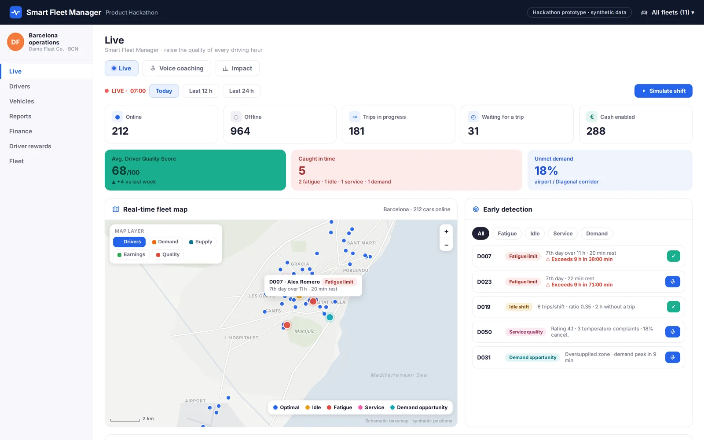
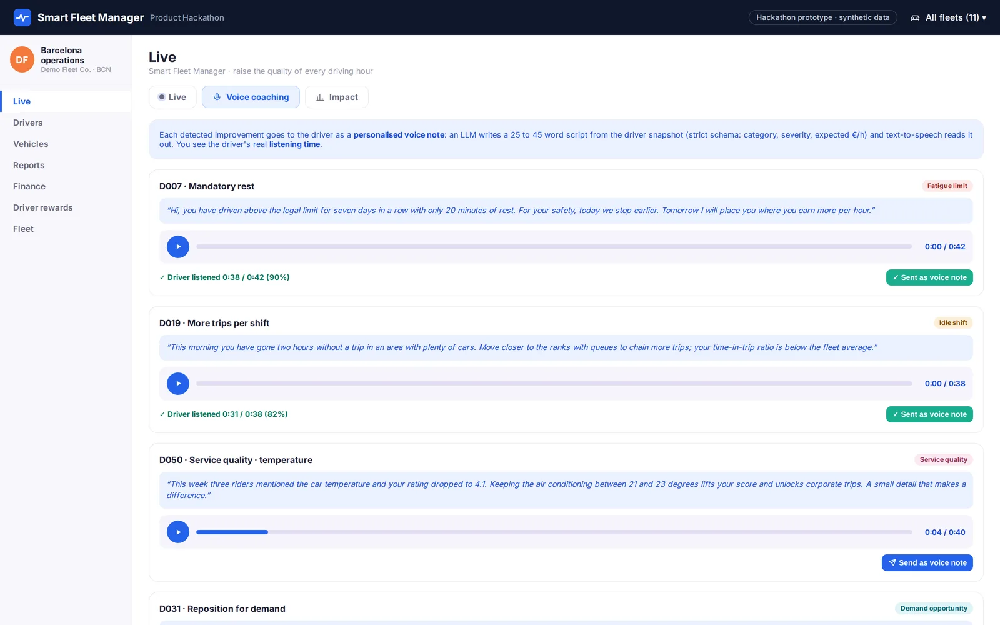
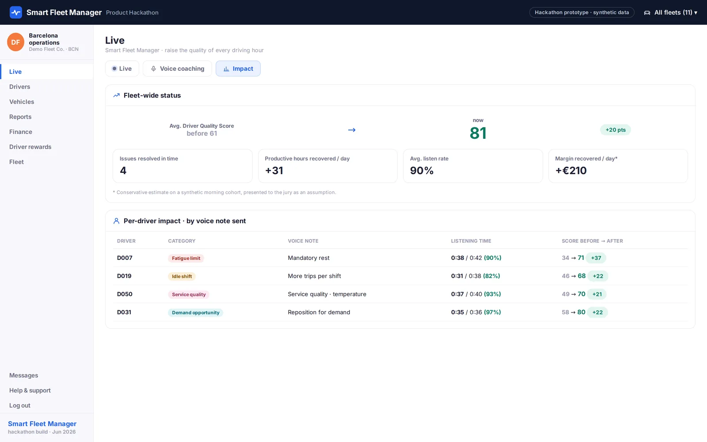
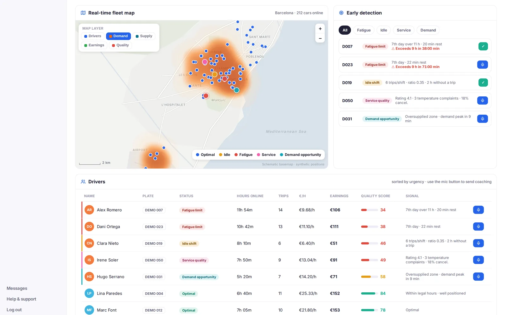

Product Hackathon · June 2026
Smart Fleet Manager · Hackathon
The company Product Hackathon asked for a smarter way to manage a partner fleet. With a team of three we built Smart Fleet Manager in one day: a live view of every driver, one quality score, a simulator of what each decision would change, and short AI-written voice notes that coach drivers on the one thing that would help them most.

What we built
- Live. Every driver on a map with demand and supply heatmaps, a quality score and a list of early alerts ordered by urgency. A simulation clock replays the challenge dataset at 1×, 30×, 120× or 600×.
- Voice coaching. For each alert, a short voice note for the driver: what is happening, what to change and what they would gain.
- Impact. Whether the note was listened to, and the driver's score before and after.


How the coaching works
A per-driver snapshot (hours online, rest against the plan, trips per hour online, cancellations, dominant zone and oversupply in that zone) goes to the model with a strict schema. It must return a category (fatigue, cancellations, relocation or good practice), a severity, the expected gain in euros per hour and a voice script of 25 to 45 words. Legal fatigue limits are rules in code, not suggestions in the prompt. The prototype also encodes one heuristic: a message with a concrete number in it converts better than a generic one, so the schema asks for a number.

What I took into DQM
- One score is easier to act on than twenty metrics, as long as the breakdown is one click away.
- The positive side matters. Coaching and recognition move behaviour more cheaply than sanctions.
- A schema turns a model into a component. Once the output has fixed fields, the rest of the product can rely on it.
Screenshots come from the prototype rendered with synthetic data and translated to English; the map is schematic. The live demo is the original hackathon build.